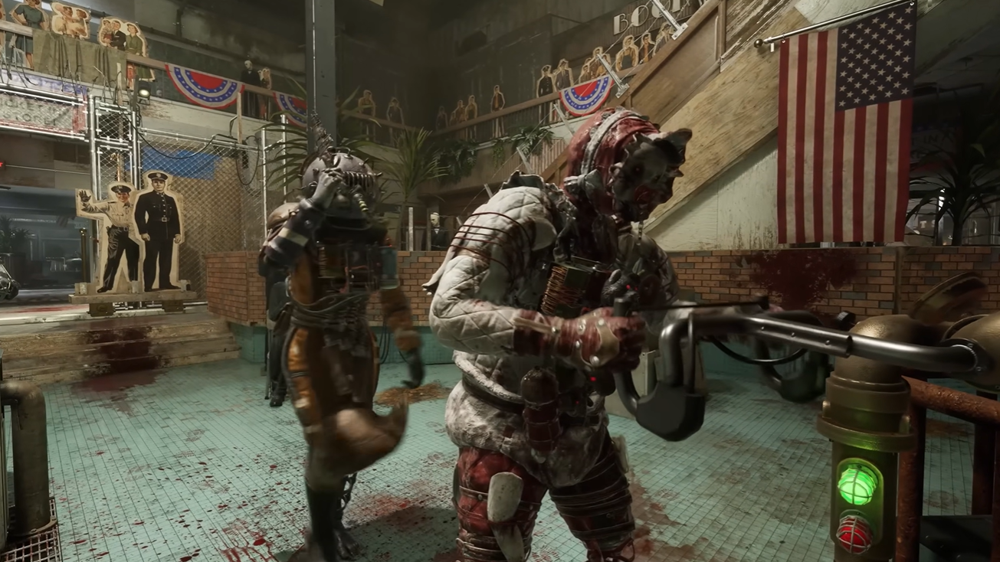
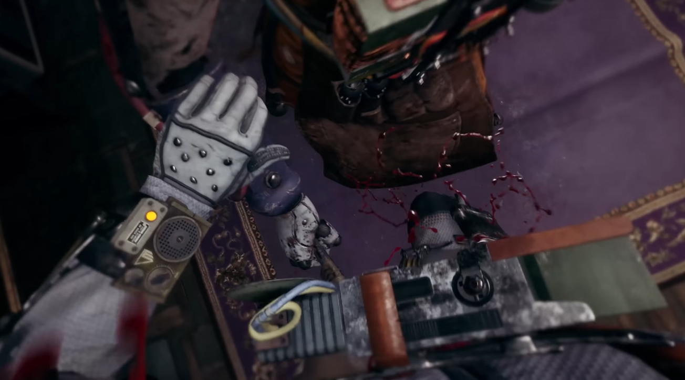
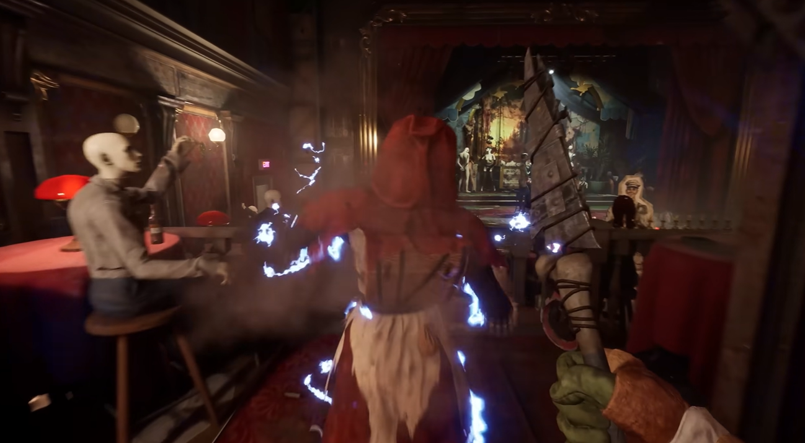
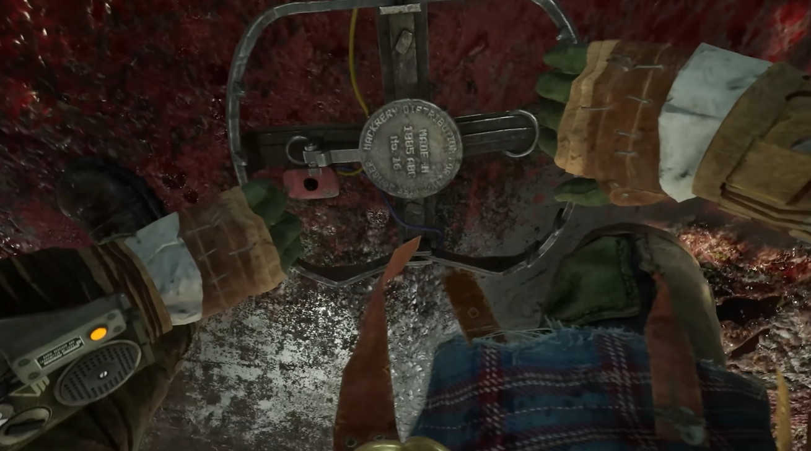

Вторжение
PvP режим
Добавлен: 21 октября 2025
1-4 игроков
Вторжение (ориг. Invasion) — это режим в игре The Outlast Trials, представляющий из себя PvP режим, в котором к игрокам, играющих за реагентов, вторгаются в испытание другие игроки в роли реагентов-самозванцев.
- 1. Описание
- 1.1. Стороны
- 1.2. Геймплей
- 1.3. Сложность
- 1.4. Глобальные вторжения
- 2. ВТОРЖЕНИЕ 2.0
- 2.1. Новая система экипировки Самозванца
- 2.2. Новая мини-игра «Схватка»
- 2.3. Новое ночное видение Самозванца
- 2.4. Изменения в игровом процессе Самозванца
- 2.5. Изменения Реагентов
- 2.6. Карты в режиме Вторжения
- 2.7. Общие изменения режима Вторжения
- 2.8. Поиск матчей в режиме Вторжения
- 3. Галерея
Описание
Вторжение (ориг. Invasion) — это режим в игре The Outlast Trials, представляющий из себя PvP режим, в котором к игрокам, играющих за реагентов, вторгаются в испытание другие игроки в роли реагентов-самозванцев.
Каждая сторона может иметь от 1 до 4 игроков. Цель игроков, играющих за сторону самозванцев — нейтрализовать команду реагентов. Цель реагентов же — пережить вторжение и пройти испытание.
Режим был введён в игру 21 октября 2025 года.
Стороны
Реагенты — основная и действующая сторона, задачей которых выступает пережить вторжение и пройти испытание. Реагенты могут иметь снаряжение, амфы, рецепты и использовать разные предметы для оказания сопротивления самозванцам.
Самозванцы — сторона, задачей которой является воспрепятствование прохождению испытания и убийство реагентов. Самозванцы в своем снаряжении имеют нож, а также могут носить при себе случайный предмет с целью маскировки под реагента. Внешне самозванцы непосредственно выглядят как реагенты, которые находятся в испытании. У самозванцев отсутствуют амфы, снаряжение и рецепты. Вместо обычных рецептов, которые используют реагенты, самозванцам предоставляется их отдельная категория.
Геймплей
Режим «вторжение» начинается на одной из случайной мк-стимуляции. При вторжении самозванцев в испытание, игра уведомляет об этом реагентов, сопровождая это характерным звуком и всплывающей надписью. Если реагенты не выполнили первое задание в испытании, то самозванцам необходимо ожидать 3 минуты, прежде чем они смогут начать главную стадию вторжения.
В зависимости от количества реагентов в испытании, напрямую зависит количество самозванцев. Так, если в испытании 4 реагента, то и вторгнуться могут от 2 до 4 самозванцев. Если же в испытании от одного до двух реагентов, то обычно вторгаются 1-2 самозванца. Стоит отметить, что эти правила не действуют на вторжения к друзьям.
Если реагент играет в одиночку, ему даётся 3 жизни для возрождения, чтобы компенсировать отсутствие союзников. В случае вторжения двух самозванцев к одному реагенту, они не смогут выйти на полигон совместно.
Как и реагенты, самозванцы всегда имеют 3 попытки, чтобы возродиться.
После выхода на полигон у самозванца есть 3 минуты, чтобы найти и нейтрализовать реагента с помощью ножа, у которого 2 вида атаки:
- Быстрый удар — отнимает 1.5 полоски здоровья.
- Удар с захватом — если реагент падает в нокдаун, у самозванца есть 30 секунд, чтобы покинуть полигон через шаттл.
Если самозванец нанесёт удар с захватом реагенту и он упадет в нокдаун, у первого будет 30 секунд, чтобы покинуть полигон через шаттл, откуда выходят экс-попы и большие экс-попы. За это время самозванец может казнить жертву, либо попробовать найти других реагентов. Если самозванец не уйдет в шаттл, то по истечению тридцатисекундного таймера его начнут бить разряды тока, и он, в конечном итоге, умрет. Также, реагенты могут убить самозванцев, используя риги, бутылки, кирпичи или другие способы, которые наносят урон вторгнувшимся.
Реагенты также имеют возможность контратаковать удар с захватом, если у них в инвентаре есть бутылка или кирпич. При этом самозванец не получит урон вовсе, а реагент потеряет здоровье, в зависимости от его изначального количества.
Если у реагента 100 единиц здоровья, то после контратаки у него останется 50 единиц. Если реагент имеет от 26 до 50 единиц здоровья, то впоследствии контратаки у останется лишь 1 единица здоровья. При 25 единицах и менее — контратака невозможна. Когда у реагента 1.5 полоски здоровья (37.5 единиц) и менее, а самозванец наносит удар быстрой атакой, то такой удар будет с захватом, который убьет реагента.
Важно заметить, что самозванцы хоть и имеют 4 полоски здоровья, но у них отсутствует регенерация здоровья во время их непосредственного присутствия на полигоне, они смогут его восстановить только тогда, когда уйдут в шаттл.
В случае убийства всех реагентов в испытании, игра заканчивается победой самозванцев.
Количество реагентов в испытании также влияет на число самозванцев, которые могут выйти на полигон одновременно:
- 1-2 реагента: может выйти лишь 1 самозванец.
- 3-4 реагента: могут выйти 2 самозванца.
Также, если реагент проходит испытание в одиночку, то в конце испытания, после вызова шаттла может выйти 1 самозванец, а если 2 и более, то выходят все самозванцы.
Сложность
Сложность испытания в данном режиме зависит от количества сыгранных матчей:
- 1-10 — начальная сложность.
- 11-50 — нормальная сложность.
- 50 и более — высокая сложность.
Глобальные вторжения
Помимо экспериментальной терапии «Вторжение», с 30 уровня игрок может разрешить глобальные вторжения в настройках приватности. Есть также отдельная возможность, позволяющая вторгаться в испытание только друзьям. Глобальные вторжения не работают в:
- Конструкторе испытаний
- Эскалации
- Перерождении
ВТОРЖЕНИЕ 2.0
14 июля 2025 года The Outlast Trials получил крупное обновление под названием "Project Boneyard" где было добавлено много новых игровых механик: Новый испытательный полигон, 2-новые МК стимуляции, Новый экс-поп, Новый каталог, Новый временный ивент, Обновление режима ЭСКАЛАЦИИ а так же и обновление режима ВТОРЖЕНИЕ под заголовочным названием "ВТОРЖЕНИЕ 2.0"
Данное обновление включала в себе следующие крупные изменения в режиме:Новая система экипировки Самозванца
Быть Самозванцем — значит не просто владеть ножом. Теперь вам доступны специализированные гаджеты, чтобы выслеживать, дезориентировать и уничтожать свою жертву.
У Самозванцев появилась полноценная система экипировки, позволяющая настраивать тактику ещё до входа в Испытание. Гаджеты можно приобрести у Доррис за Ваучеры и экипировать через новое меню «Снаряжение Самозванца».
Доступные гаджеты:
- МИМИК — Принимает облик Реагента. Вы становитесь тише при движении и подготовке к удару. Держите поддельный предмет в руках, чтобы слиться с толпой и оставаться незаметным для пингов.
- НЕЙРОШОК — Метательный снаряд, который кратковременно дезориентирует Реагента и отключает его костюм. Длительность эффекта зависит от расстояния, которое преодолел заряд перед попаданием.
- СТИМУЛЯТОР — Вводит мощный стимулятор, временно повышая скорость, выносливость и даруя иммунитет к снарядам.
- СТАЛЬНАЯ ЛОВУШКА — Устанавливает капкан, который на мгновение обездвиживает любого попавшегося Реагента.
- ДАТЧИК ДВИЖЕНИЯ — Размещаемое устройство, обнаруживающее движение Реагентов в радиусе действия.
- ПРИМАНКА ДЛЯ ЭКС-ПОПА — Приманка, которая привлекает Экс-Попа, заставляя его патрулировать место где она была сброшена.
Новая мини-игра «Схватка»
Теперь удар ножом переводит Самозванца и Реагента в режим СХВАТКИ.
Самозванец: Многократно нажимайте кнопку, чтобы нанести как можно больше урона.
Реагент: Многократно нажимайте кнопку, чтобы сопротивляться атаке и снижать входящий урон.
Оставшееся здоровье Реагента напрямую влияет на исход схватки. Чем серьёзнее ранен Реагент, тем сложнее ему выжить в этой дуэли.
С введением СХВАТОК Реагенты теперь могут активно противостоять атаке Самозванца. В связи с этим бутылки и кирпичи больше не позволяют мгновенно контратаковать, если находятся в инвентаре.
Новое ночное видение Самозванца
Самозванцы получили собственное ночное видение. В отличие от версии Реагентов, его эффективность ограничена — это делает тьму более надёжным убежищем для Реагентов, но при этом даёт Самозванцам возможность выслеживать цели и ориентироваться в условиях слабой освещённости. Такой подход усиливает динамику противостояния хищника и жертвы.
Ночное видение Самозванца быстро разряжается и не восстанавливается со временем. Чтобы пополнить заряд, нужно отступить к Вратам Вторжения. Пользуйтесь им осмотрительно — только при крайней необходимости.
Изменения в игровом процессе Самозванца
Геймплей за Самозванца был глубоко переработан в пользу охоты как основной механики.
- Урон от удара ножом снижен до 25 (ранее 33).
- Перезарядка между ударами сокращена до 1.5 секунды (ранее 3 секунды). Во время перезарядки Самозванец может только идти, бег недоступен.
- Добавлен УДАР В СПИНУ — новая атака, мгновенно убивающая Реагента. Этот приём полностью игнорирует мини-игру «Схватка» и не подлежит контратаке. Чтобы разблокировать этот Хим-усилитель, обратитесь к Барлоу.
- Красный индикатор — над ближайшими Реагентами теперь отображается красный индикатор с именем и уровнем здоровья.
- Мимикрия — Самозванец больше не имитирует случайного Реагента по умолчанию.
- Режим «При смерти» — удары ножом больше не убивают мгновенно.
- Виджет группы — теперь постоянно отображается в режиме камеры.
- Совместное появление — при вторжении 2 Самозванцев они появляются вместе.
- Индивидуальный таймер возрождения — у каждого Самозванца свой таймер.
- Новый Хим-усилитель «Удар в спину» — открывает добивающую атаку.
- Время пинга сокращено до 5 секунд (было 10).
- Финальная фаза — на этапе «Покинуть зону» у Самозванцев нет ограничения по времени.
- Активное время вторжения — 1 Самозванец — 5 минут, 2 — 3 минуты, 3-4 — 2 минуты.
Комментарий разработчиков: Мы переработали Самозванцев, чтобы они лучше выполняли роль постоянной угрозы на протяжении всего Испытания, и оснастили их разнообразными гаджетами для разных тактик и стилей охоты. Внимательные Реагенты по-прежнему могут уйти от погони и выжить при столкновении, поэтому успешные Самозванцы должны полагаться на тайминг, скрытность, координацию и тщательно спланированные засады, а не на грубую силу. Новые инструменты дают дополнительную возможность противостоять опытным Реагентам, создавая более сбалансированную и увлекательную динамику противостояния хищника и жертвы для обеих сторон.
Изменения Реагентов
Геймплей Реагентов переориентирован на выживание, срыв планов противника и побег, а не на прямые столкновения.
- Минимальный урон — Реагенты наносят минимальный урон Самозванцам.
- Тактика с бесконечным оглушением — больше не работает.
- Реакция после удара — вместо полной остановки — вздрагивание.
- Двери шаттла — открываются автоматически после финальной задачи.
- Система пингов — Реагенты могут отмечать Самозванцев всегда.
- Переработана система начисления очков — снижены штрафы, увеличены награды.
- Снаряжение «Глушилка» — теперь накладывает электрический сбой вместо рвоты.
Комментарий разработчиков: Мы переработали опыт игры за Реагента, сделав его более доступным для игроков любого уровня. У них появилось больше возможностей оправиться от ошибок, изучить механики и постепенно совершенствовать навыки. Инструменты Реагента теперь сосредоточены на скрытности, выживании и задержке преследователя, а не на прямом бою. Успех приходит к тем, кто грамотно использует свои инструменты, остаётся в тени и создаёт возможности для побега.
Карты в режиме Вторжения
Карты Испытаний в режиме Вторжения переработаны для улучшения общей динамики.
- Более открытая планировка — уменьшено число заблокированных дверей, замков и тупиков.
- Исключены карты — из ротации исключены карты с критическими узкими местами.
- Доступность — все Испытания доступны для глобального вторжения.
Общие изменения режима Вторжения
- Нет возврата — игроки не могут выходить и возвращаться после начала вторжения.
- Межкомандная голосовая связь — возможность общаться с противниками.
- Амфы теперь работают — Манёвр уклонения, Последний шанс, Самооживление, Сильная рука.
- Награды за глобальное вторжение — игроки получают награды за включение функции.
Поиск матчей в режиме Вторжения
Система подбора игроков переработана для более честных и сбалансированных матчей.
- Учитываются параметры — уровень Вторжения, Рецидива и Терапии.
- Критерии поиска — постепенно расширяются для приемлемого времени ожидания.
- Мониторинг — данные в реальном времени и корректировки на сервере.
Галерея



